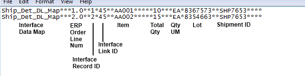
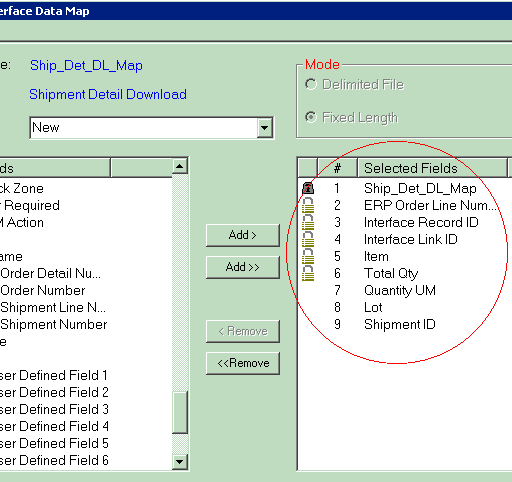

A fixed length interface involves using text files to transmit data (whose value length is limited to a certain number of characters) to/from the ERP. Using this method to download, your ERP places data in a text file (with a user-defined file extension) in a directory on your server. When the interface process is initiated, the system pulls the data from the text file, parses them (based on a data map record which determines the contents and structure of interfaced data), and places them into a SCALE database table.
Using this method to upload, when the interface process is initiated, SCALE places data that is eligible for uploading in a text file (with a user-defined file extension) in a directory on your server. This eligible data has reached a minimum user-defined status, such as "load confirmed" for shipments or "closed" for receipt containers. The ERP then will retrieve this text file, parse the data, and insert it into its own database.
In its essence, fixed length mode is works exactly the same as delimited mode, except that you can set character limits on the values you download/upload.
You would typically use the fixed length method if you do not want to write directly to an interface database table. Generally, this method is appealing if your ERP can export data via text files, and you do not have the business need to communicate directly to the system's database tables. Also, fixed length mode gives you the opportunity to tightly regulate the actual character length of interfaced values, which is helpful if your ERP requires such strict standards.
SCALE fixed length interface mode supports four data actions (for uploads and downloads):
The following configurations need to be addressed to process data via a fixed length interface:
The following is an example of a fixed length text file that is specially-formatted to interface data into the system:

- The Interface Record ID value is an unique identifier that labels each line in this fixed length file. This value is unique only to this particular fixed length file.
- The Interface Link ID value is an identifier that, in this case, ties these detail lines to the appropriate shipment. Each detail from this shipment that appears in this fixed length file will have the same interface link ID (45 in the example above).
- The Interface Data Map value indicates the data map record that the system used to interface this data. The following data map was used to interface the above data:
You can define the directory where the system will place fixed length files to upload to the ERP, or already downloaded files that the ERP sent to SCALE. You can define these directories (the Interface Download Input Directory for downloads and the Interface Upload Input Directory for uploads) on the Interface System Values Window.
The system will attempt to process any files that have the appropriate file extension. You can configure this extension on the Interface Process Window, specifically the process detail record's File Extension Field. For example, suppose you enter the file extension "sh" for the fixed length order download process detail record. When the download interface process runs, the system will look in the specified directory for all files that have an "sh" extension. Note that it does not matter what the file is actually named, as long as the matching extension exists.
The system will attempt to upload data that has attained a certain status:
If you select the Save Processed Data Checkbox on the interface process detail, the system will save each "used" fixed length file in the interface's Output directory, appending it with a user-configurable extension. If you do not select this setting, the system will delete "used" fixed length files. Note, however, if a data validation error occurs with the interface, the system will place the original data file (with its original file extension) into a user-defined subfolder in the Output directory. You can indicate this directory in the Interface System Values Window.
The answer for this depends on what type of data you are interfacing into the system. For example, you could have downloaded orders to go into the pool (in the Planned Shipment Insight), or as an "unassigned shipment" (in the Shipment Insight). These statuses can be configured in the Interface System Values Window.
An important part of configuring how you will interface data is deciding what fields to pass to/from the system. An interface data map record identifies what fields should be included in an interfaced file, and the position of each field. The system uses this information to read files it obtains from the ERP or uploads to the ERP. You will need to keep in mind that each data type has different field values that are required to be provided when interfacing. You can also choose to interface a number of other fields, which again specifically depend on what type of data is being transmitted.
For each type of data that you want to interface, there are fields that SCALE requires you to include with each fixed length file. You can indicate these fields on the data map record. Examples of required values would include such fields as Shipment ID for order data, Item ID for item data, etc. You can also add any other field value to your data map, as long as it appears on the database table for that type of data. See the table values spreadsheet for a list of fields available.
The following is an example of how you could configure a data map record to download order (shipment) details. In the example below, note that the left pane displays all the fields that are available to add to your data map. You can use the > button to add a field to your data map. Fields with a light-colored lock icon are required fields that can be moved up/down the list, but not deleted from the map. Fields with a dark-colored lock icon cannot be moved or deleted from the map. Note that data map records for other touchpoints would look similar:
